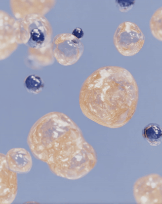
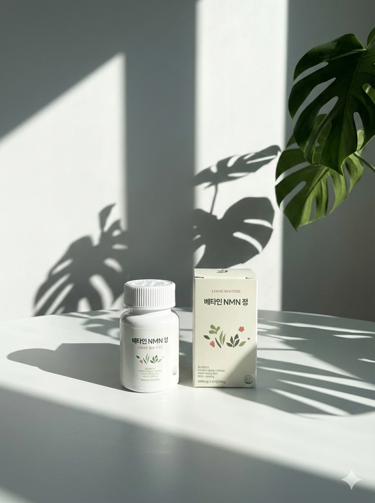
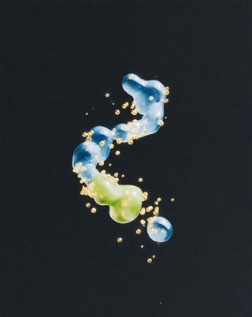
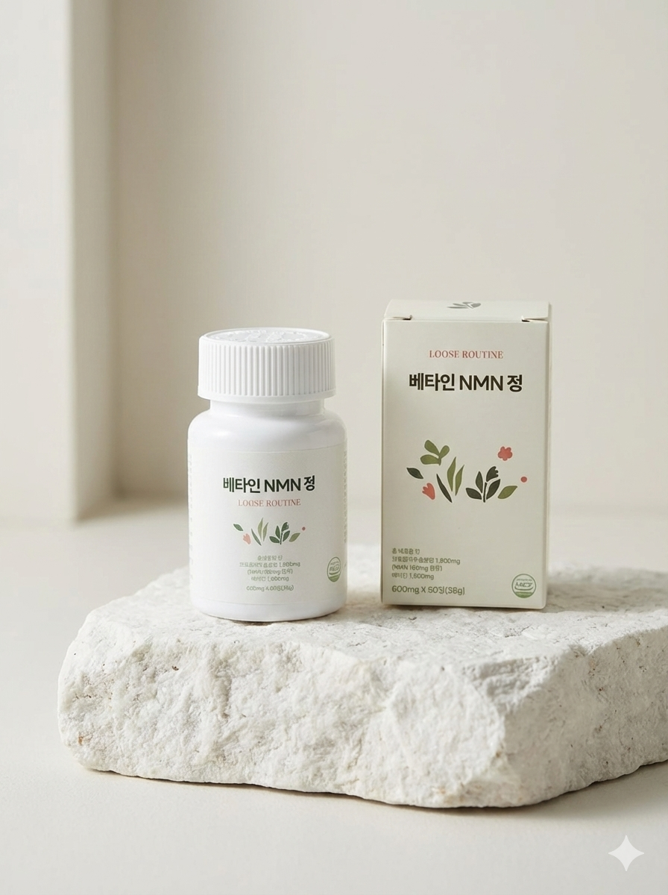

잠을 자도, 쉬어도, 커피를 마셔도 늘 피곤하다면 나이 탓이 아닙니다. 세포 에너지를 만드는 핵심 물질이 부족한 겁니다.
이 증상들, 단순히 나이가 들어서가 아닙니다. 세포 수준에서 에너지를 만드는 능력이 떨어졌기 때문이에요.
만성피로의 가장 흔한 원인 중 하나는 미토콘드리아의 에너지 생산 저하입니다. 그리고 그 핵심에 NAD+ 수치 감소가 있어요.
NAD+(니코틴아미드 아데닌 디뉴클레오타이드)는 우리 몸 모든 세포에서 에너지를 만들 때 반드시 필요한 조효소예요.
쉽게 말하면 세포의 발전소(미토콘드리아)가 전기를 만들 때 꼭 필요한 부품이에요. NAD+가 부족하면 아무리 영양을 섭취해도 에너지로 전환이 안 됩니다.
NAD+ 수치 연령별 변화 (20대 기준)
40대에 이미 20대의 절반 이하로 떨어집니다. 세포가 에너지를 만드는 능력 자체가 줄어드는 거예요. 나이가 들수록 피곤한 게 느껴지는 이유가 여기 있어요.
NAD+는 음식으로 보충하기 어려워요. 필요한 양의 수백 분의 1만 식사로 얻을 수 있어 나이가 들수록 외부에서 보충이 필요합니다.
NMN(니코틴아마이드 모노뉴클레오타이드)은 체내에서 NAD+로 직접 전환되는 전구체예요.
2013년 하버드 의대 데이비드 싱클레어 교수 연구팀이 NMN을 투여한 쥐에서 세포 에너지 수준이 젊은 쥐 수준으로 회복된 걸 발표하면서 저속노화 연구에서 가장 주목받는 성분 중 하나가 됐어요.
NMN 섭취
소장에서 흡수되어 빠르게 혈류로 이동합니다.
NAD+ 전환
세포 내에서 NMN이 NAD+로 전환되어 수치를 보충합니다.
미토콘드리아 활성화
충분한 NAD+가 확보되면 세포 발전소가 정상 가동됩니다. ATP(세포 에너지) 생산이 늘어납니다.
에너지 개선, 세포 노화 지연
만성피로 개선, 집중력 회복, 세포 회복 속도 향상이 기대되는 이유입니다.

저속노화 연구의 핵심은 세포의 에너지 생산 능력을 유지하는 것이에요. NMN은 이 접근법에서 가장 직접적인 방법 중 하나입니다.
NMN이 NAD+로 전환될 때 메틸기(CH₃)가 소모됩니다. 메틸기가 부족하면 전환 효율이 떨어져요.
베타인(TMG)은 이 메틸기를 공급하는 역할을 해요. NMN 단독보다 베타인을 함께 섭취할 때 NAD+ 전환율이 더 높아지는 이유입니다.

NAD+의 직접 전구체. 체내에서 빠르게 NAD+로 전환되어 세포 에너지 생산을 직접 지원합니다. 저속노화 연구에서 가장 주목받는 성분이에요.
NMN이 NAD+로 전환될 때 필요한 메틸기를 공급합니다. 베타인과 NMN을 함께 섭취하면 전환 효율이 높아져요. 루즈루틴 NMN이 베타인을 함께 담은 이유입니다.

NMN은 직구로 구매하는 분들이 많지만 원산지 불명·함량 불투명·통관 리스크가 있어요. 루즈루틴 NMN은 국내 제조, 함량 검증된 제품입니다.
"처음엔 미래를 위한 투자라 생각하고 큰 기대 없이 시작했는데, 한 달 정도 꾸준히 먹어보니 신체 나이가 확실히 젊어지는 게 체감되어 정말 신기합니다. 예전에는 자고 일어나도 몸이 천근만근이었는데, 요즘은 세포 하나하나가 깨어나는 듯한 개운함이 느껴지고 20대 때의 활력이 다시 돌아오는 기분이에요."
"노화에 도움이 되는지는 모르겠지만, 먹은 날과 안먹은 날의 차이가 큽니다. 우선 점심시간 식곤증이 없어지고, 카페인 없이도 맑은 정신이 유지됩니다. 늘 빠지지않고 주문하고 있습니다."
"40 넘어가면서 저속노화에 관심이 많아지네요. 내 몸에 투자하기로 NMN 영양제 선택해봤어요. 피부톤도 밝아지고 몸 컨디션이 한결 좋아졌어요. 꾸준히 먹어보려 합니다. 만족해요."
"처음엔 노화 관리 때문에 찾아보다가 NMN 영양제 먹기 시작했어요. 일주일 지나니까 아침에 몸이 덜 무겁고 하루 컨디션이 전보다 안정적인 느낌입니다. 속 불편함도 없고 꾸준히 먹기 부담없어서 만족중이에요."
"갱년기 증상 때문에 시작했는데 일단 새벽에 깨지 않고 잠을 푹 잡니다. 피로감이 많이 줄었고, 아침에 일어나기 너무 힘들었는데 복용 후 아침에 일어나기 훨씬 수월해졌어요."
